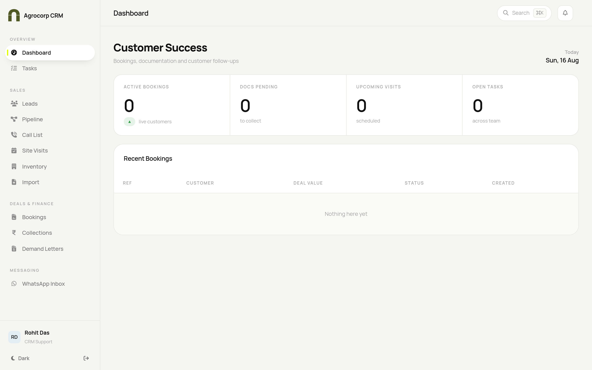
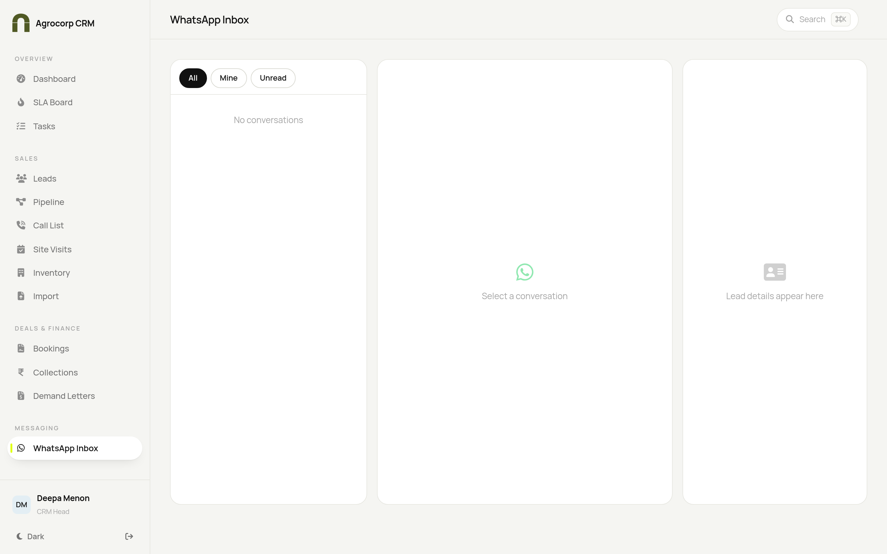
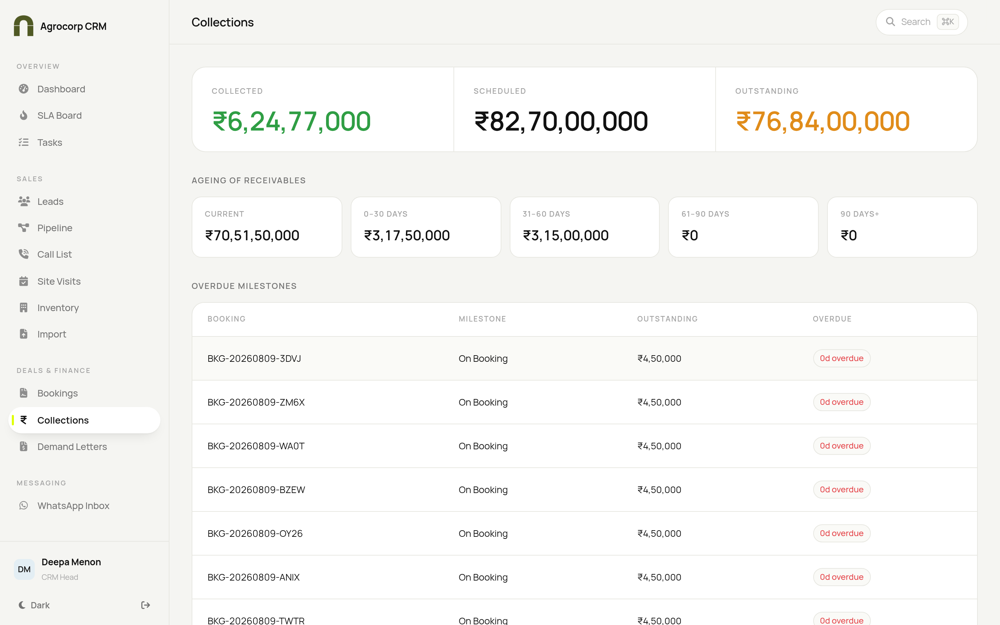
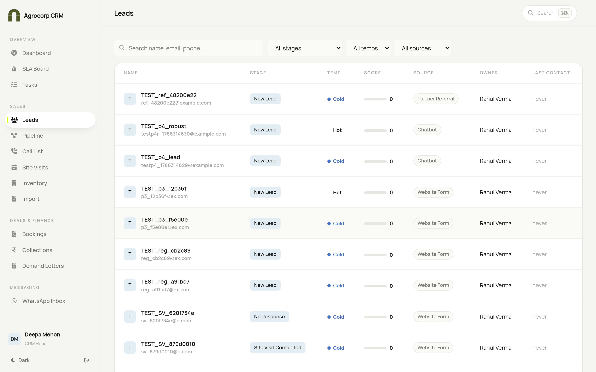

Your playbook for post-sales customer care in Agrocorp CRM — welcome documents, ongoing communication and keeping customers happy. For CRM Head and CRM Support.
CRM HeadCRM Support
User Manual · Find your task in the contents and follow the numbered steps.
Agrocorp CRM
Customer Relationship Playbook
Who this guide is for
Role
What you do
Access
CRM Head
Owns post-sales customer care
View and manage customer-relationship records & post-sales; can edit leads
CRM Support
Assists with customer care
View only — can see records and leads, but cannot edit or manage
Difference in one line: the Head can edit records and drive post-sales actions; Support can view and assist.
Your home screen

Customer Success dashboard — active bookings, documents to collect, upcoming visits and open follow-ups, with a table of recent bookings.
Your work centres on customers after a deal is confirmed: sending welcome documents, answering questions on WhatsApp, and keeping an eye on payments and milestones so customers feel looked after.
TASK 1 — Answer customers on WhatsApp

WhatsApp Inbox — conversation list, live thread and customer context.
Open Messaging → WhatsApp Inbox.
Use the All / Mine / Unread filters at the top to find waiting messages.
Click a conversation to read it in the middle pane.
The right pane shows the customer's details, stage and tags.
Type your reply at the bottom, or insert a canned reply for common questions.
Add a private note or a tag so colleagues have context.
Click Open full lead to see the customer's complete record.
Note: real WhatsApp sending/receiving works once the Admin connects the company account in Integrations. Until then it runs in demo mode.
TASK 2 — Send welcome documents to a new customer
Open Sales → Leads and find the customer (they'll be at a booked/won stage).
Open their record.
Go to the Documents section.
Click Send welcome documents (or attach and share the welcome pack).
Confirm the customer's contact details are correct first.
Save / send.
TASK 3 — Keep an eye on payments & milestones

Collections — use this to see where each customer stands on payments.
Open Deals & Finance → Collections.
See Collected, Scheduled and Outstanding at a glance.
Check Overdue milestones to know which customers may need a friendly reminder.
Reach out proactively over WhatsApp (Task 1) so customers stay informed.
Team play: the money actions (verify, demand letters) belong to Accounts. Your job is the customer relationship — gentle reminders, answers and reassurance.
TASK 4 — Look up a customer's full history

Leads — the full customer list with stage, source and owner.
Open Sales → Leads.
Search by name, phone or email (or press Ctrl/Cmd+K).
Open the record to read the activity trail, calls, WhatsApp history and documents.
Use the Journey tab to see exactly where the customer is in their journey.
Quick answers
Question
Answer
Where do I reply to customers?
Messaging → WhatsApp Inbox.
Can I take payments?
No — that's the Accounts team. You handle the relationship and reminders.
I can only view records
You're on the Support role — the CRM Head can edit and manage.
How do I see a customer's full story?
Open their lead record and read the activity trail and Journey tab.
 Agrocorp™
Agrocorp™